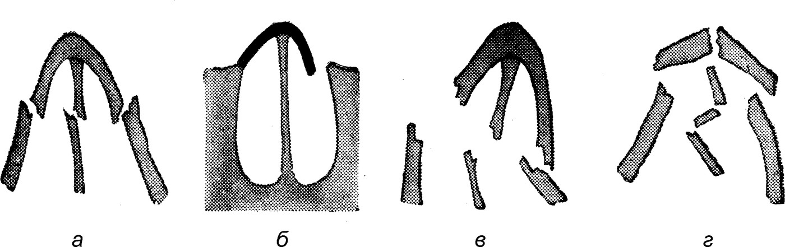

Травмы и инородные тела носа и околоносовых пазух
Травмы носа
По происхождению травмы носа подразделяют на бытовые, спортивные, производственные и военного времени. Самые частые из них — бытовые и спортивные. Бытовые травмы обусловлены несчастным случаем или конфликтной ситуацией, разрешаемой кулачным способом. Травмы при несчастных случаях обусловлены падением ничком субъектов, находящихся в нетрезвом состоянии или споткнувшихся о препятствие. Чаще всего этот вид травмы возникает у детей. У них не возникает немедленных разрушительных последствий благодаря эластичности пирамиды носа и ее хрящевого каркаса, но при дальнейшем развитии лицевого скелета и, в частности, структур носа, эти травмы могут быть причиной различных дисгенезий, о которых говорилось ранее. У взрослых бытовые и спортивные травмы вызывают более обширные разрушения в момент самой травмы, поскольку скелет носа у них более жесткий и хрупкий. Производственные травмы не так часты, они возникают также при падении с высоты, взрывах, ударах движущимися механизмами и т. п. Травмы военного времени обусловлены осколочными или пулевыми ранениями. Они, как правило, сочетаются с ранением глубоких тканей лица и часто представляют угрозу для жизни пострадавшего. Эти травмы возникают во время боевых действий, а также при попытке убийства или самоубийства или в результате несчастного случая при неосторожном обращении с оружием. Последствиями травм носа могут быть косметические или функциональные нарушения, а также их комбинация.
Патологическая анатомия. Вид, форма, глубина поражения при травме носа определяются многими факторами: плотностью, массой, скоростью движения травмирующего объекта, положением пострадавшего, направлением движения головы (встречное, удаляющееся или уклоняющееся), а также направлением вектора силы, приводящей к травме.
Различают повреждения костного скелета носа, его хрящевого остова и сочетанные повреждения обеих структур пирамиды носа, открытые и закрытые переломы костей носа, переломы костей носа без смещения и со смещением — боковым и в сагиттальной плоскости с образованием «проваленного» носа. Открытые переломы носа могут быть как с повреждением кожных покровов, так и с прорывом слизистой внутрь полости носа. Переломы хрящевого остова чаще наблюдаются у взрослых ввиду уплотнения и ломкости перегородки носа, которая в возрасте старше 50 лет нередко пропитана солями кальция и приобретает плотность костной ткани.

Переломы собственных костей носа могут сочетаться с переломами костных частей перегородки носа, а также с фрактурой восходящей ветви верхней челюсти, скуловой кости, ушибом и переломом верхнего альвеолярного отростка и фрактурами резцов. В компетенцию ринологов входят репозиция дислоцированных частей пирамиды носа и эндоназальные манипуляции по восстановлению проходимости носовых ходов.
Симптомы и клиническое течение. Ушиб пирамиды носа относится к травмам, которые могут сопровождаться выраженными рефлекторными реакциями — от сильного болевого ощущения до травматического шока, проявляющегося артериальной гипотензией, мидриазом, брадикардией, поверхностным дыханием, бледностью кожи и потерей сознания. Нередко при ушибах носа и лобной области наблюдаются явления сотрясения или ушиба головного мозга.
Сильный ушиб лобно-носовой области следует относить к черепно-мозговой травме, при которой сотрясение головного мозга встречается в 60–70% случаев. Признаки сотрясения: потеря сознания длительностью от нескольких секунд до нескольких минут; тошнота и рвота. После восстановления сознания — жалобы на головную боль, головокружение, шум в ушах, слабость, потливость, нарушение сна. Нередко наблюдается амнезия — больной не помнит обстоятельства травмы и короткий период событий до и после нее. Из других признаков следует отметить боли при движении глаз, диплопию. Повреждение костей мозгового черепа отсутствует. Давление спинномозговой жидкости и ее состав существенно не изменены. Указанные симптомы обычно исчезают через 2–3 недели, а при адекватном лечении — и раньше.
Ушиб головного мозга при лобно-носовой травме — более тяжелая форма его поражения, отличающаяся от сотрясения наличием участков повреждения вещества мозга, субарахноидального кровоизлияния, а в ряде случаев — и переломов свода и основания черепа. Учитывая то, что массивные травмы носа нередко сопровождаются ушибами лобных долей головного мозга, ЛОР-специалист должен ориентироваться в классификации степеней ушиба головного мозга.
Легкая степень характеризуется потерей сознания на срок от нескольких минут до 1 ч. После восстановления сознания пострадавшие обычно жалуются на головную боль, головокружение и тошноту. Могут выявляться бради- или тахикардия, иногда — повышение АД. Отмечается нистагм, асимметрия сухожильных рефлексов, менингеальные симптомы, которые обычно исчезают через 2–3 недели после травмы.
Средняя степень проявляется потерей сознания от десятков минут до 4–6 ч. Выражена амнезия, иногда наблюдается нарушение психики. Возможны многократная рвота, преходящие расстройства жизненно важных функций. Обычно развиваются четкие менингеальные симптомы. Очаговая симптоматика определяется локализацией ушиба. Это могут быть зрачковые и глазодвигательные нарушения, парезы конечностей, расстройства чувствительности, речи и др. В течение 3–5 недель перечисленные симптомы постепенно исчезают, но могут длительно сохраняться в редуцированной форме, а больные становятся метео- и стрессозависимыми.
Тяжелая степень характеризуется потерей сознания от нескольких часов до нескольких недель. Наблюдаются угрожающие нарушения жизненно важных функций с расстройством частоты и ритма дыхания, резким повышением или падением АД, лихорадкой. В неврологическом статусе часто преобладает первично стволовая симптоматика: плавающие движения глаз, парез взора, расширение или сужение зрачков, нарушение глотания, меняющийся мышечный тонус, патологические стопные рефлексы и др. Эти симптомы в первые дни после травмы затушевывают очаговые признаки ушиба головного мозга, которые при поражении лобных долей имеют особенности. Иногда отмечаются генерализованные или очаговые судорожные припадки, признаки отека головного мозга. Мозговые и особенно очаговые симптомы регрессируют медленно; часто наблюдаются выраженные остаточные двигательные нарушения, изменения в психической сфере.
К объективным симптомам травмы носа относятся: припухлость и кровоподтеки с обеих сторон в области спинки носа, распространяющиеся на лицо и нижние веки, иногда на субконъюнктивальное пространство. При открытых переломах отмечается раневое повреждение кожных покровов, наружное кровотечение либо рана покрыта кровянистыми корками. При переломах костей носа и хрящевого каркаса имеется смещение пирамиды носа или провал его спинки. Ощупывание зоны перелома вызывает у пациента резкую болезненность и ощущение крепитации и подвижности спинки носа. В некоторых случаях в области перелома и в окружающих тканях возникают явления эмфиземы, проявляющиеся увеличением объема тканей и крепитацией пузырьков воздуха. Эмфизема возникает при повреждении слизистой оболочки носа и затруднении носового дыхания вследствие гематомы и травматического отека при попытке пострадавшего продуть нос. Первоначально эмфизема локализуется у корня носа, затем распространяется на нижние веки, лицо и даже на шею. Особенно выражена эмфизема при решетчато-глазничных переломах. При особо тяжелых травмах лобно-носовой области, сопровождающихся переломами основания черепа и разрывами твердой мозговой оболочки, наблюдается назальная ликворея.
При передней риноскопии в носовых ходах определяют сгустки крови, смещение перегородки носа, ее утолщение в результате субпериостальной гематомы. Носовые раковины увеличены в размерах, закупоривают носовые ходы. Рентгенографией носа в профиль, а также в проекциях, визуализирующих придаточные пазухи носа и решетчатую кость, устанавливают окончательный диагноз.
Клиническое течение травмы носа зависит от ее тяжести, наличия дислокационных явлений, а также от степени вовлечения в травматический процесс головного мозга. Часто травмы носа проходят самостоятельно, без вмешательства врача, однако нередко остаются деформации, требующие впоследствии пластических операций.
Травмы околоносовых пазух
Травматические повреждения придаточных пазух носа значительно более редки, чем травмы и ранения пирамиды носа, однако протекают клинически более тяжело. Причины травматизма придаточных пазух те же, что и пирамиды носа. При ушибах челюстно-лицевой и лобной области могут возникать переломы передних придаточных пазух носа, а при ушибах лобной области — и переломы основания черепа в области дна передней черепной ямки с разрывами (или без них) твердой мозговой оболочки. При тупых травмах могут наблюдаться повреждения мягких тканей, трещины стенок придаточных пазух носа, закрытые и открытые переломы верхней челюсти, лобной, решетчатой и основной костей, нередко сопровождаемые вибрационными, коммоционными и компрессионными поражениями головного мозга (Бабияк В. И. и соавт., 2002). Симптомы и клиническое течение различаются в зависимости от травматического повреждения придаточной пазухи.
Поражение лобной кости. Чаще всего оно проявляется признаками травматического шока и поражением головного мозга. Местно: боль в области травмы, припухлость и гематома, ушибленные и иные раны мягких тканей, проникающие до кости. При переломе передней стенки лобной пазухи при пальпации ощущается резкая боль и крепитация костных фрагментов. Нередко возникает эмфизема мягких тканей в периорбитальных тканях, лице и др. При ушибах лобной кости и переломах ее стенок нередко наблюдаются носовые кровотечения. При переломе мозговой стенки с разрывом твердой мозговой оболочки наблюдается носовая ликворея. Рентгенография лобной кости позволяет установить характер перелома, выявить состояние основания черепа, наличие гемосинуса и субарахноидального кровоизлияния в передней черепной ямке.
Огнестрельные и осколочные ранения лобной кости характеризуются значительной тяжестью поражения, поскольку они обычно сочетаются с ранениями глазницы и лобных долей головного мозга. Такие ранения относятся к компетенции нейрохирургов, и лишь тангенциальные (касательные) ранения лобной пазухи, нарушающие целость передней стенки лобной пазухи и сочетающиеся с ранениями полости носа и нижних отделов решетчатой кости без проникновения в полость черепа и разрыва мозговых оболочек, подлежат лечению в специализированном ЛОР-отделении. Ранения лобных пазух, особенно проникающие как в сам синус, так и в полость носа и черепа, чреваты тяжелыми осложнениями, которые нашли свое отражение в классификации Н. С. Благовещенской (1972).
Классификация осложнений после ранений лобной пазухи следующая: А. Гнойные осложнения 1. Травматические гнойно-полипозные фронтиты.
- Фронтиты с экстрацеребральными гнойными осложнениями: а) фронтиты и эпидуральные абсцессы; б) фронтиты и субдуральные абсцессы.
- Фронтиты с интрацеребральными гнойными осложнениями: а) фронтиты и интрацеребральные абсцессы; б) фронтиты и нагноение мозгового рубца.
- Ограниченные гнойные пахименингиты в лобной области.
Б. Негнойные осложнения 1. Стойкая носовая ликворея.
- Клапанная пневмоцефалия.
- Носовые кровотечения.
Из перечисленных осложнений чаще встречаются гнойно-полипозные фронтиты и фронтоэтмоидиты. Наиболее тяжело протекают повреждения лобной пазухи, сопровождающиеся интрацеребральными гнойными осложнениями. Кроме вышеназванных осложнений следует отметить острые воспалительные процессы в кожных покровах лобной области (рожа, фурункулы, подкожная эмпиема, распространяющаяся на конвекситальные покровы) либо в костных тканях (остеомиелит), которые могут стать причиной тяжелых интракраниальных осложнений.
Сочетанные травмы и ранения лобной и решетчатой кости отличаются особой тяжестью клинического течения, поскольку в 86% сочетаются с экстра- или интрадуральными поражениями. Такие поражения, особенно с вовлечением в травматический процесс мозгового вещества, сопровождаются неврологическими, психическими и глазными осложнениями.
При ранениях костного лобно-решетчатого массива с проникновением раневого канала в переднюю черепную ямку, в орбитальную и инфраорбитальную области возникают разнообразные неврологические симптомы, обусловленные непосредственным поражением образований, расположенных на основании передней черепной ямки, важнейшие из которых — это мозговое вещество лобных долей с находящимися в них нервными центрами, обонятельные и зрительные нервы, а также первая ветвь тройничного нерва, верхние ветви лицевого нерва и нервы, иннервирующие экстраокулярные мышцы, — глазодвигательный, блоковый и отводящий. Поражение этих образований вызывает соответствующие симптомы (аносмия, амавроз, паралич взора и др.).
Поражения верхней челюсти могут быть открытыми и закрытыми (по отношению к верхнечелюстной пазухе). Чаще всего встречаются бытовые травмы, вызванные тупыми ударами в область скулы и верхнего альвеолярного отростка. Обычно эти травмы сопровождаются гемосинусом, нарушением целости зубов верхней челюсти, носовым кровотечением, сотрясением головного мозга. Нередко переломы верхнечелюстной пазухи сочетаются с ушибами пирамиды носа и переломами его костей, а также с переломом скуловой кости. Пострадавших с такими сочетанными травмами госпитализируют в отделение челюстно-лицевой хирургии. Нередко травма верхнечелюстной пазухи наступает при экстракции зубов, в основном верхнего VI зуба, а также при удалении прикорневых кист V, VI и VII верхних зубов. В этом случае образуется свищевое отверстие в лунке пораженного зуба, признаком которого является попадание жидкости в нос через лунку, верхнечелюстную пазуху и ее выводной проток. При продувании носа воздух из полости носа через выводное отверстие верхнечелюстной пазухи попадает в пазуху и из нее — в полость рта через перфорированную лунку зуба.
Изолированные переломы решетчатой кости и клиновидной пазухи встречаются весьма редко. Обычно они сочетаются с переломами основания черепа и тяжелой черепно-мозговой травмой. Огнестрельные ранения основной пазухи и решетчатой кости обычно заканчиваются гибелью пострадавшего на месте ранения.
Клиническое течение травматических поражений придаточных пазух носа определяется прежде всего тяжестью травмы, реперкуссионными травматическими поражениями головного мозга и видом анатомических разрушений, которые причиняет травмирующий объект. Как правило, при несвоевременных оказании специализированной хирургической помощи и проведении антибактериального лечения такие травмы осложняются тяжелыми челюстно-лицевыми, орбитальными абсцессами и флегмонами. При риносинусовых травмах с переломом основания черепа и доступа инфекции к мозговым оболочкам развиваются тяжелые менингоэнцефалиты, прогноз которых находится на грани неблагоприятного.
Прогноз при тяжелых травмах весьма осторожный; в подавляющем большинстве случаев исход зависит от сроков хирургического вмешательства и своевременности и интенсивности антибактериального лечения. При легких и средней тяжести травмах прогноз, как правило, благоприятный.
Инородные тела носа и околоносовых пазух
Инородные тела данной локализации следует относить к травматическим повреждениям, поскольку при длительном их нахождении в полости носа или в пазухе они вызывают гнойные осложнения, принципиально не отличающиеся от повреждений, вызванных нарушением целости тканей.
Инородные тела полости носа
Чаще всего инородные тела носа встречаются в детском возрасте. Основной путь их проникновения в полость носа — через преддверие, однако они могут попадать в нос и через хоаны во время кашля, чихания в случаях, когда в полости рта находятся какие-либо объекты (таблетки, капсулы, фрагменты пищи и др.). В медицинской практике нередко в полости носа остаются куски ваты, небольшие тампоны, редко — отломки медицинских инструментов. Среди инородных тел могут быть эктопированные зубы, которые в процессе развития перемещаются в направлении полости носа. В полости носа также могут находиться огнестрельные объекты (пули, осколки и др.).
Инородные тела, поступившие спереди, чаще всего застревают в нижнем носовом ходе, а поступившие через хоаны — в среднем носовом ходе. Нередко, особенно в детском возрасте, инородные тела находятся в полости носа длительное время (недели и месяцы) и обнаруживаются лишь после осложнения в виде гнойного ринита.
Симптомы и клиническое течение. При длительном пребывании (более 3 дней) инородного тела в полости носа возникает отек слизистой, появляются односторонние слизистые, затем — слизисто-гнойные выделения, иногда сукровичного характера, одностороннее затруднение носового дыхания, субъективная и объективная какосмия. При передней риноскопии определяют выраженную воспалительную реакцию, массивный отек слизистой, кровянистые слизисто-гнойные выделения. Эти явления маскируют инородные тела, которые в большинстве случаев визуально не определяются. Рентгенологически можно визуализировать лишь рентгеноконтрастные инородные тела. Клиническое течение характеризуется постоянной назальной пиореей, обструкцией одной половины носа, локальной (в носу) и общей головной болью.
К инородным телам относят и так называемые спонтанные ринолиты, которые развиваются в течение длительного времени, в основном у взрослых, чаще у женщин, и обусловлены профессиональными вредностями (запыленность помещения). В этиологии ринолита большую роль играет все же инородное тело, реже — сгусток крови, оставшиеся незамеченными, вокруг которых агломерируют пылевые частицы, образуя постепенно объемное тело, заполняющее носовые ходы.
Спонтанный ринолит образуется при выпадении солей из носовой слизи. При химическом исследовании ринолита обычно находят до 15–20% органических веществ; из неорганических — главным образом углекислые и фосфорокислые соли кальция и магния. Форма ринолита — самая разнообразная: круглая, овальная, клиновидная и др. В среднем вес ринолита составляет 1–5 г, но встречаются и гигантские ринолиты, деформирующие пирамиду носа. Длительность пребывания ринолита в полости носа колеблется в широких пределах и иногда достигает десятилетий.
С течением времени ринолит образует пролежни, покрывается грануляциями и корками, что затрудняет его распознавание. Нередко эти явления симулируют злокачественную опухоль полости носа, с которой его и следует дифференцировать.
Инородные тела околоносовых пазух
Чаще всего они относятся к объектам травматического происхождения. Они могут длительное время находиться в пазухе в виде инкапсулированных инородных тел, порой не вызывая существенных субъективных симптомов. Однако чаще эти инородные тела ведут к острой воспалительной реакции, возникающей на второй день после их внедрения. В некоторых случаях применяют атипичный подход к инородному телу с учетом кратчайшего к нему доступа.
К осложнениям присутствия инородных тел в околоносовых пазухах относят флегмоны лицевой области, гнойные процессы в орбите, гематогенные менингиты и абсцессы мозга, остеомиелиты.
Источники
- Бабияк В. И., Накатис Я. А., Говорун М. И. Оториноларингология. Руководство. Т. 1. — СПб.: Питер, 2009. — Часть II, гл. 12 «Травматические повреждения носа и околоносовых пазух. Инородные тела носа»: С. 371–379.
Раздел «Учебник» — справочная теория, не клинические рекомендации. Тактика ведения пациента — по разборам КР.